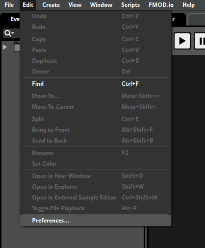
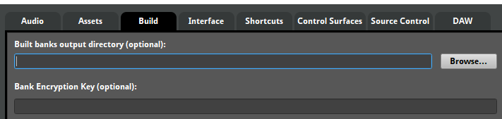

After you've opened the Cave Story project file, you're going to want to go to Edit -> Preferences.
Immediately go to the Build tab at the top, and click the "Browse..." button in the top right.
Find where you've installed the Cave Story FMOD dll.
You're going to need to select the "audio" folder inside of your data folder!
Once you've done that, you can close the preferences window and save your project.
You've now set it up so that when you build your Bank File, it gets put in the right place!
Now we can move on to creating an event, aka putting audio into the game!